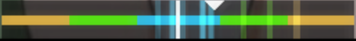

Osu! Standard
Ce mode de jeu est celui par défaut
Le but est simple , suivre les cercles au rythme de la musique
L'interface se présente sous cette forme
En haut à gauche, c'est votre barre de vie
En haut à droite c'est votre score et juste en dessous votre précision
En bas à gauche, c'est votre combo, il sert à gagner plus de points
En bas, au milieu, quand on joue, on peut voir une barre, quand les petits traits sont à gauche, c'est que vous êtes trop rapide, et à l'inverse, s'ils sont à droite vous êtes trop lent

Les différents types de cercle
Le cercle simple :
Il suffit de cliquer 1 fois pour avoir les points
Le slider:
Il faut maintenir le clic du début à la fin du slider
ATTENTION Les cercles simples et les slider peuvent rapporter 0; 50; 100; 200 ou 300,
en
fonction de la précision du joueur
si le joueur a 0, le combo reset
Le spinner:
Il faut maintenir le clic et faire tourner le spinner le plus vite possible pour obtenir le plus de points
A partir du niveau de difficulté '3 étoiles' on peut commencer à voir des patterns de gameplay se
répéter
Les streams :
Les Jumps :
Les petits tips pour le mode de jeu:
1
Le jeu de base est paramétré pour jouer en utilisant le clic de la souris
il est donc conseillé de désactiver le clic de la souris, et de paramétrer 2 touches clavier que vous
souhaitez utiliser
2
Il est aussi conseillé de régler la sensibilité de la souris, en fonction de la difficulté il faut
adapter la sensibilité, mais pour commencer à jouer au jeu je recommande de jouer avec une sensibilité
basse, 800 ou 1000 de dpi sur la souris et entre 0,8 et 1 de sensibilité dans les paramètres du jeu
3
Toujours lié à la souris, il est conseillé de désactiver l'amélioration de la précision du pointeur dans
les paramètres de la souris